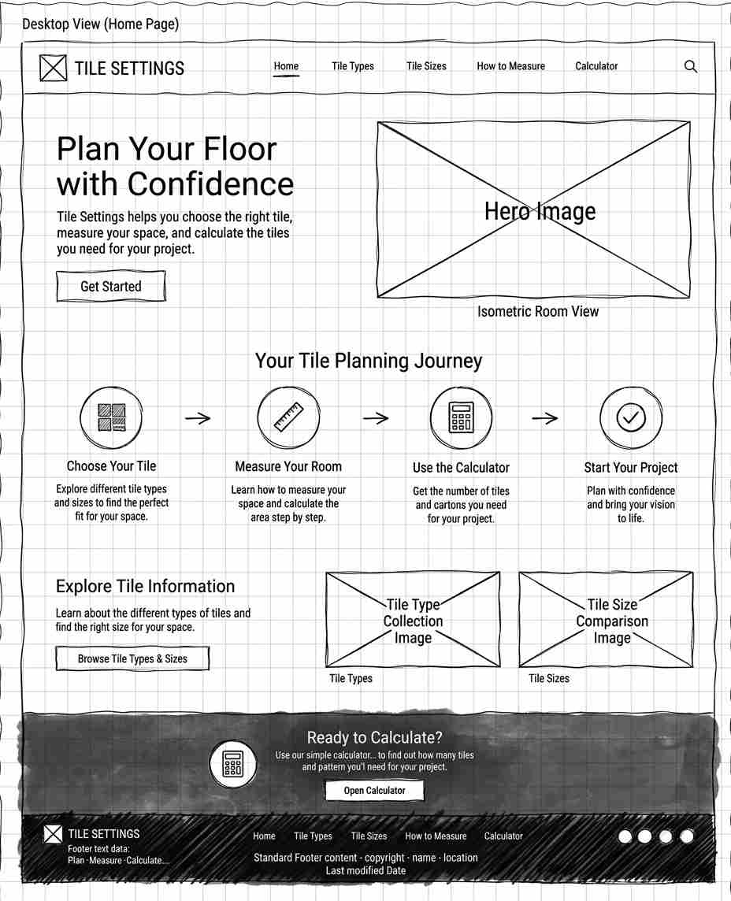
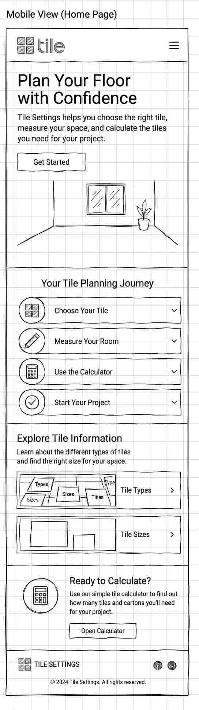

Site Name: Tile Settings
I chose the name Tile Settings because the website is designed to help users make decisions and calculations when planning a tile flooring project. The name was also inspired by my friend's tile business, Jsec Settings, which was the experience that inspired me to create this project.
Logo
Site Purpose
Tile Settings provides beginners with information and tools for planning tile flooring projects. The website will explain different tile types and sizes, provide a visual guide for measuring a room and calculating its area, and include a tile calculator that helps users estimate the number of individual tiles and cartons needed for a project.
Scenarios
- How do I measure my room and calculate its floor area?
- How many 60 × 60 cm tiles do I need for my room?
color-schema
Primary color:
#282C38: gray/charcoal blue, This will be used on the header and footer sections of the website.
Logo and Button color
#ffed76: Golden Aurelia, This wll be used on Buttons, links and also the website Logo
Sections Background color
#e1e5eb: light gray-blue Background/sections
main content Background
#FFFFFF: White Main content background color
Typography
Headings → Poppins
Body → PT Serif Caption
Desktop view Wireframe

Mobile view Wireframe
